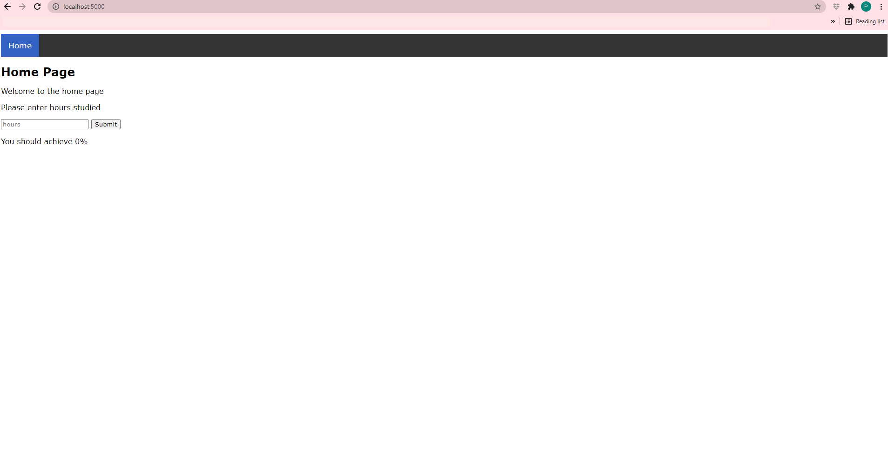
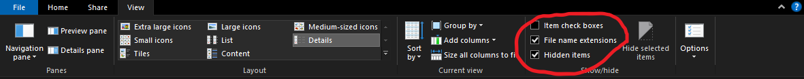

Test Marks Prediction Using Linear Regression
Peter McClintock
18/10/2021
Overview
- The goal of this tutorial is to create a basic regression model that will predict your percentage mark based on how many hours you have studied
- Languages used in this project are, Python, HTML, and CSS
- Other key skills are git integration and deploying websites using Heroku
Predict your grade!
Please enter hours studied
You should achieve {{mymark}}%
Setup
Folder Setup
Create a main project folder, I have called mine (basicregwebtutorial). Within this, create another folder that will contain the main files of the website, I have named mine mysite. For the sake of the tutorial it may be easier to follow this naming convention so as to not confuse directories. Within the mysite folder another two folders are created, static and templates.
The static folder will contain files such as css and images, while the templates folder will be used to store the actual html files for each page. This is default notation for flask.
Python Instalation
To check if you have Python already installed open command prompt and type python or py and hit enter. The build version of python should return if installed. The version of python that this tutorial is built on is python 3.9.7 and hopefully future updates will not wreck any of the tutorial. If you do not have python installed a quick google search should direct you to the main website to download it. For the tutorial we are using the Windows Installer (64-bit) version.
Virtual Environment
A virtual environment acts as a separate version of python, libraries and scripts installed into it are isolated from any libraries installed in a “system” Python, i.e., one which is installed as part of your operating system.
As is good practice we will be setting up virtual environment for this project. The virtual environment package can be installed through the command line using
py -m pip install virtualenv. Using command line again we set the path to whichever folder you are completing this project in. You can navigate to your
project folder using C:\your_standard_file_path> cd folder-name\folder-name\project-folder-name . In my case this is
C:\users\pmcc> cd documents\projects\basicregwebtutorial. Now you can run the code py -m venv virtual to setup the virtual environment folder.
To install any packages in the virtual environment we can use the command below subsituting package-name with our desired package, i.e. flask.
C:\your_standard_file_path\basicregwebtutorial> virtual\Scripts\pip install package-nameThe packages needed for this project are;
- flask
- gunicorn
- sklearn
To check that packages have been installed you can check what packages are in the environment using the command below.
C:\your_standard_file_path\basicregwebtutorial> virtual\Scripts\pip freezeVisual Studio Code
To begin working on the project we first need to setup our workspace. For the project I will be using Microsoft Visual Studio Code as it allows easy switching between the different file types. VS is free can be easily installed from their website. Be sure to install visual studio code and not the similarly named Visual Studio 2019
The Code
Flask Starter Code
Finally we get to write some code! Thankfully, Flask requires relatively little code to setup. Opening our project folder (basicregwebtutorial) in visual studio code create a file named app.py in the mysite folder. This is the base script that links all of our files together. Below I have included the code for this page.
from flask import Flask, render_template, request
import simplemodel as sm
app = Flask(__name__)
@app.route("/", methods = ["GET","POST"])
def index():
if request.method == "POST":
hrs = request.form["hours"]
markpred = sm.marksprediction(hrs)
else:
markpred = 0
return render_template("index.html", mymark = markpred)
if __name__ == "__main__":
app.run(debug=True)
The code starts by importing the necessary libraries. Flask is self explanatory. The render template library is used to create the pages from html files in the templates
folder of the project. Request allows the user to store data that can be used within the application. The next step is to create an instance using the
Flask() command. We use __name__ as default for the name of this application. The @app.route() is triggered when that specific URL
is entered. In our case when running locally when http://localhost:5000/ , likewise, http://127.0.0.1:5000/ is called, it shall trigger the index(): function
returning our index.html page. Finally, the if statement is used so that we can update the page live while making changes in the editor. We will simply use the home page to
display and update our results. The code in the index function will be explained later.
Home Page
For the purposes of the tutorial we create a very basic html file that will be able to display our data. Create in the templates folder a file called index.html. This will serve as our home page. The code is shown below.
<!DOCTYPE html>
<html>
<head>
<link rel="stylesheet" href="{{url_for('static', filename='style.css')}}" type="text/css">
</head>
<body>
<div class="topnav">
<a class="active" href="{{ url_for('index') }}">Home</a>
</div>
<div class = "container">
<body>
<h1>Home Page</h1>
<p>Welcome to the home page</p>
<p>Please enter hours studied</p>
<form action="/" method="POST">
<input type="text" name="hours" placeholder="hours">
<input type="submit">
</form>
<p>You should achieve {{mymark}}%</p>
</body>
</div>
</body>
<html>
In the header of the file we have a link to a basic css file that we will create in a minute. To make the page look slightly nicer we also add a navbar at the top of the
page. We add some basic text and prompt the user to input the number of hours studied. Using then a form with a POST method we submit the users number of hours calling the
index page. This activates the index(): function and calls the code in app.py. The if else statement included checks to see if there was a POST request and if
so take the data and store it in a new variable hrs. Then all we have to do to use our regression model is call the model and pass in the hrs variable. The else statement
is there for when we first load the page the hrs variable will have no assignment as there is yet to be a POST request.
Our regression model that we will create in a moment takes the hrs and predicts the corresponding mark. To finish the model returns that predicted mark which we save into the new variable markpred. Finally, when we reload the page at the end of the function we pass in the predicted mark which gets displayed in our HTML code, inside the curly brackets. These curly brackets are Jinja notation and work similar to python code. We use them in this case to simply pass in a variable and display it.
CSS File
The code below is a very basic css file to make the example look a little neater. Create a file in your static folder named style.css. We will link to this from our index.html file. This is another instance of Jinja notation where we can link to files in directories using the url_for() function.
/* Formats all text */
* {
font-family:verdana;
}
/* Formats the first header */
h1 {
font-size: 25px;
}
/* Add a black background color to the top navigation */
.topnav {
background-color: #333;
overflow: hidden;
}
/* Style the links inside the navigation bar */
.topnav a {
float: left;
color: #f2f2f2;
text-align: center;
padding: 14px 16px;
text-decoration: none;
font-size: 17px;
}
/* Change the color of links on hover */
.topnav a:hover {
background-color: #ddd;
color: black;
}
/* Add a color to the active/current link */
.topnav a.active {
background-color: #3361c4;
color: white;
}
Simple Regression Model
Now we get to write our model! For this example we will be using sklearn to create a univariate regression model from some sample data that should work through the github repository this project is saved in.
import pandas as pd
import numpy as np
from sklearn.linear_model import LinearRegression
def marksprediction(hrs):
data = pd.read_csv("https://raw.githubusercontent.com/Petermcc042/regression-web-deployment-tutorial/main/student_scores.csv")
X = data.iloc[:, :-1].values
y = data.iloc[:, 1].values
model = LinearRegression()
model.fit(X,y)
#print(model.intercept_)
#print(model.coef_)
Xtest = np.array(hrs)
Xtest = Xtest.reshape((1,-1))
result = model.predict(Xtest)
return result
The above code creates a function that takes the number of hours studied in as a parameter. Using very basic data pulled from github it creates a regression model with sklearn. Finally, we pass in the hrs value (converting it to an array) to return a predicion based on the created model.
Coding Finished!!
CONGRATULATIONS! That is all the coding needed to give a good demonstration. Don't worry if you are looking for more there are many other models and much richer datasets that you can now look into working on.
Seeing the Results
Setting up CMD
Time to put all that code into action. After learning how to run the code the world really is your oyster. Experimentation is key to learning more about web dev!
Visual studio gives us built in features to run our code and flask provides a simple way of checking the code locally. In Visual studio in the top menu bar click terminal, new terminal if there isn't one already there. The working directory should be already set to our project folder (basicregwebtutorial). Regardless of this we need to change the directory as our script.py file is a folder deeper in /mysite. As we have set-up our virtual environment to contain the packages we need we must run the script through this environment. This is shown below.
C:\your_standard_file_path\basicregwebtutorial> virtual\Scripts\python mysite\app.pyWe direct windows through the virtual environment folders to "python" which calls our installation of python. We then run the script named app.py that is one folder deeper than the project folder. If you are having issues here check and make sure your filepath is set to the basicregwebtutorial folder and you named your python file app.py.
Hopefully everything has went smoothly and you are now sitting with your very own local web page, woooo! My worked example is included below

Ready for Deployment
While not entirely necessary at this point sometimes it feels good to know the full pipeline through to owning your own domain. I would suggest working a lot more on the quality of your website filling out each section and then potentially coming back. The next section we will use Heroku to host our website for free. However, the heroku cli requires git is installed on your computer.
Setting up Git
GIT is a version control system that is widely used. It is software that tracks changes in sets of files on your computer. Once set-up we will use it to track our files for the website and then send those files to heroku. Installing GIT is fairly straightforward and there is a lot of community help if you get stuck.
Once GIT is installed you must now download the Heroku CLI. Again heroku provide a great tutorial on how to download their CLI. Once installed you will need to create a free heroku account to launch your app (the webpage). The heroku tutorial really takes you through this process very well and explains how to login in on your local machine. Once you believe you have both GIT and the CLI installed you can check Heroku using
C:\your_standard_file_path> heroku --versionThis tutorial is using heroku/7.53.0. Given that you are already logged in to the heroku web page you can run the code below to launch a new window in your default browser which will allow you to login locally.
C:\your_standard_file_path> heroku loginOn your heroku dashboard page there will be the option to create a new app follow this through with whatever domain name you prefer. Heroku will automatically check to make sure there are not duplicate names. Now we can head back to the command line.
C:\your_standard_file_path> heroku appsHeroku apps allows us to see a list of what apps we currently have registered with heroku. Your new app name should appear hear.
As mentioned we will send our files to Heroku through GIT. However, before we can send our current files Heroku requires three more small files.
Heroku Requirements
Heroku requires three files for it to be able to run flask.
- Python packages list
- A Web Server Gateway Interface - gunicorn
- The version of python you are running - 3.9.7 for me
Step 1 - Requirements.txt
These files are all easy to get so don't panic if you don't understand the why. The requirements file is a text file containing the list of packages we have used to run the code. Heroku needs this to know what packages to make available for your app.
To get the list of packages we are using in the virtual environment we can run the code below in the terminal. As always check the file paths.
C:\your_standard_file_path\basicregwebtutorial> virtual\Scripts\pip freeze > requirements.txtWe access the virtual folder and run pip freeze but instead of printing the packages we store them in a requirements text file. Move this file into the mysite folder. Step 1 complete!
Step 2 - Procfile
In your mysite folder we now create a Procfile. Right click create a text file and name it Procfile. Make sure in the file explorer settings you enable file name extensions and Hidden items. Warning: do not edit hidden items they are just so you can see that they have been created but are hidden for a reason!

In the text file we write the following line. web: gunicorn script:app. This lets Heroku know what web server to use to run the application, and then
we point heroku at the name of our instance, which in the script.py file we set as 'app'. We enable extensions as it allows us to take any off the end of the text file.
You may get a warning however this is correct it should simply be Procfile with no extension.
Step 3 - Runtime
The third file simply requires the version of python that is currenlty being used. As checked from the start this tutorial is using python 3.9.7. As such we create a
.txt file named runtime with python-3.9.7 inside it. All three of these files must be saved to the website folder (mysite), not the project folder. At the
time of writing this tutorial Heroku accepted multiple versions of python. To double check search for heroku supported python runtimes to ensure your version of python is
compatible.
Great! now it is time to send the files to Heroku!
Pushing the Files
The last stage of the process involves pushing the files to Heroku. As mentioned we use git to help with this process. To begin with initialise a git repository in the mysite folder using the command below.
C:\your_standard_file_path\basicregwebtutorial\mysite> git initAs long as your hidden items is activated you will be able to see the newly created folder and delete it if you should wish. The next four commands are repeated every time you wish to make changes to your code and so I will put them in one block.
C:\your_standard_file_path\basicregwebtutorial\mysite> git add .C:\your_standard_file_path\basicregwebtutorial\mysite> git commit -m "commit comment"C:\your_standard_file_path\basicregwebtutorial\mysite> heroku git:remote --app app_name_insertC:\your_standard_file_path\basicregwebtutorial\mysite> git push heroku masterThe first line means add all files that have changed from the git folder, meaning it adds our changes. The second line submits these files with a comment. For example, if you change css styling maybe that will be the comment. For your first commit, the comment may be as simple as first commmit. It is simply to keep track of commits. The third line specifies which app you wish to send these changes to. If this is your first app this stage is uneccessary but it is good practice. The final line sends the changes to Heroku for it to update.
In the future when changes are made locally, repeat the four steps above and it will update the code on Heroku.
The End
Congratulations if you made it to the end of the tutorial and have managed to get a page hosted on Heroku. Hopefully you learnt a lot and can take this basic framework and expand it. Good Luck.